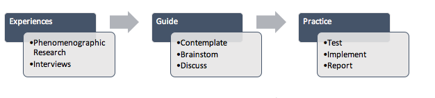

Proceedings to RAILS - Research Applications, Information and Library Studies, 2016: School of Information Management, Victoria University of Wellington,
New Zealand, 6-8 December, 2016.
Using phenomenography to bridge the gap between research and practice: a meta-analysis of three phenomenographic studies
Introduction. The findings of three recent phenomenographic studies conducted by a practitioner-researcher team (the information literacy experiences of English as a foreign language (EFL) students, how international branch campus faculty members experience the academic library and the open access experiences of faculty members in online education) are analysed to discover what practical implications were revealed from the categories of description that can be used in practice.
Method. Meta-analysis of the categories of description of three phenomenographic studies was conducted.
Analysis. Categories of description were analysed iteratively in order to identify which library services and processes could be informed by the results of phenomenographic research.
Results. The meta-analysis of phenomenographic results shows that there were three library services and processes: information literacy instruction, scholarly communication and evaluation of services, where research results can be applied to improve library practice.
Conclusions. The phenomenographic method reveals useful results of library users’ experiences and perceptions that can be used as a guide for improving library practice across a variety of settings.
Introduction
This paper will show how findings from phenomenographic studies can be used to inform library practice by providing a meta-analysis of the results of three different studies employing the same methodology to address different research objectives within library and information science. Study 1 examines how faculty members who teach online experience open access (Salaz, Johnston and Pickles, 2017). Study 2 examines how English as a foreign language (EFL) students experience information literacy (Johnston, Partridge and Hughes, 2014). Study 3 examines how faculty members in international branch campus universities experience the academic library (Salaz, 2015). The aim of the paper is to outline how the research outcomes of the three studies and the method of phenomenography can be used to inform some library services and processes.
Phenomenography as a research approach is concerned with identifying the qualitatively different ways in which people experience a given phenomenon (Bruce, 1999; Marton and Booth, 1997),and is a useful research method for linking research and practice and for its potential to utilize research outcomes in practice due to its exploration of people’s experiences. Bruce (1999, p. 3) states that in phenomenography,
we find a research tool which, in revealing variation, uncovers everyday understandings of phenomena and provides outcomes which are readily applicable to professional practice. The outcomes may be used in human computer interface design, enhancement, implementation and training, in the design and evaluation of services, and in education and training for both end-users and information professionals.
Åkerlind, McKenzie and Lupton (2014) argue that the value of phenomenography is that it can inform the what of curriculum design, and phenomenographic action research can be used to identify the concepts that students find difficult to understand. Therefore, in teaching and learning, the perceptions and experiences of core subject concepts held by students can be revealed through phenomenographic inquiry and used to tailor and improve instruction around those concepts. Phenomenographic studies in fields such as education have already been shown to have an impact on practice (Marton and Säljö, 1976). Marton and Säljö developed a typology of approaches to learning, termed deep and surface approaches, which have been deeply influential in teaching practice in the decades since.
However, phenomenography is not a go-to methodology within library and information science and may not immediately come to the mind of a practitioner or researcher engaged in seeking evidence-based solutions to applied problems. It may not be intuitive to envision the ways in which a phenomenographic outcomes can be utilized beyond the research itself for the development of evidence-based tools, services, communications and interventions within library and information science settings. We suggest that certain types of practical problems in these settings are particularly well positioned to benefit from phenomenographic outcomes. We begin to identify what those outcomes are by thematically analysing the results of the categories of description of the phenomenographic studies reviewed here.
The gap between research and practice in all fields, and in library and information science in particular, has been widely discussed and acknowledged (Haddow and Klobas, 2005; McKechnie, Julien, Genuis, and Oliphant, 2008). Some have argued for more positive metaphors than ‘the gap’, such as a metaphor about a coin with two sides or about a ‘relationship’ between research and practice (Pilerot, 2016). However the fundamental challenge of facilitating flow between research outcomes and practical applications remains. Haddow and Klobas (2005) present a typology of eleven different barriers to the translation of research findings into practice. Some of these, such as the culture gap and motivation gap have to do with practitioners’ learning and work habits, and are very challenging to address as researchers with a particular study to share. Others, however, such as the relevance gap, which occurs due to a lack of agreement between practitioners and researchers on which problems are worth investigating, and the activity gap, which occurs due to a lack of involvement of practitioners in research, are addressed in this report of research which was planned, carried out and written up or communicated by a team consisting of a professional library practitioner and an academic.
Literature review
The following literature review focuses on literature about phenomenographic studies in library and information science as well as literature on the three focus areas of the studies analysed in this paper.
Phenomenography studies: information literacy
Phenomenography within library and information science has been applied mainly to the study of information literacy, information seeking and information behaviour (Boon, Johnston, and Webber, 2007; Diehm and Lupton, 2014; Edwards, 2006; Lupton, 2008; Maybee, Bruce, Lupton, and Rebmann, 2013). Boon et al. (2007) explored how English faculty members’ experiences information literacy. They argued that libraries need to be
aware of any differing conceptions of information literacy between themselves and faculty in order to work together effectively. Faculty’s conceptions of information literacy included accessing and retrieving textual information and using information and communication technologies to access and retrieve information. Diehm and Lupton (2014) found that university students experienced information literacy as: learning to find information; learning a process to use information; learning to use information to create a product; learning to use information to build a personal knowledge base; learning to use information to advance disciplinary knowledge; and learning to use information to grow as a person and to contribute to others. The authors argue that these experiences can be used to design academic curricula and information literacy education. Maybee et al. (2013) found that university students experienced informed learning as a: new way of learning; imitating essays; and instructions for any assignment. They argued that the partnership between researchers and practitioners ‘exploring informed learning lessons has the potential of drawing together researcher and practitioner views of information literacy pedagogy’ (p. 17).
These research studies outline the experiences students or faculty have of information literacy and argue that these findings can be used to inform practice. Lupton (2008) does provide some advice for developing information literacy curricula such as activities and assessments using results from her phenomenographic study. There is, however, a gap in the literature and it is not known where these findings have been put into practice since many research-based practical changes and improvements go unreported.
The information literacy experiences of various groups, including Website designers (Abdi, Partridge and Bruce, 2016), church members (Gunton, Bruce and Stoodley, 2012), and university students in various fields of study at the undergraduate and postgraduate levels (Diehm and Lupton, 2012, 2014; Lupton, 2008) have been explored phenomenographically, yielding various categorizations of experience. Some of these categories appear to have relationships or overlap with one another, while others appear to be distinctive. Given this fact, along with our knowledge of how essential language is to building an understanding and interpretation of the world, it is reasonable to expect that a student’s experience seeking, evaluating and applying information would be affected dramatically by operating in a foreign language. In spite of this, there is currently ‘a distinct lack of literature about EFL students and information literacy’ (Johnston, Partridge and Hughes, 2014). As education, and particularly higher education, continues its trend towards internationalisation, this literature is essential for teaching librarians and educators to develop and apply knowledge of international students’ information literacy experiences.
Faculty experiences: open access
The open access movement represents a significant development in the way that knowledge is developed and communicated across scholarly communities and to both scholarly and popular audiences. While it carries tremendous implications for the advancement of human knowledge, current research demonstrates that the people most involved in producing and disseminating original research, typically university faculty members and researchers, encounter a variety of personal, institutional and social forces which influence their understanding of and engagement with scholarly communication, and open access in particular (Carter, Snyder, and Imre, 2007; Creaser et al., 2010; Davis and Connolly, 2007; Kim, 2010; Peekhaus and Proferes, 2015; Poynder, 2010).
Studies show that there is a slow uptake of self-archiving in institutional repositories and that academics prefer to deposit in subject specific repositories over institutional repositories (Carter et al., 2007; Creaser et al., 2010; Poynder, 2010). Studies also show authors face several barriers to self-archiving including copyright concerns, uncertainty over embargo periods, the time and technical skills needed, and concerns over tenure and promotion (Creaser et al., 2010; Davis and Connolly, 2007; Kim, 2010; Peekhaus and Proferes, 2015). Additionally, while academics support open access in principle, there is still a slow uptake of publishing in open access journals and a perception or concern that the quality of open access journals is lower than non-open access journals, even though this is not the case (Xia, 2010). As with the articles using phenomenography to explore information literacy, these articles offer insight into experiences, but do not always offers guidance in how to use these experiences to improve practice. These articles have also not used the phenomenographic method to explore academics’ experiences with open access, and therefore an opportunity exists to explore this further using phenomenography.
Because of concerns common to both the open access movement and online education, the views of faculty who teach in online programmes are of particular interest. Benefits such as widening access to education and increasing participation and diversity in higher education are found in both the open access movement and in online education (Deal, 2002; Karber, 2001; Li and Irby, 2008). The attitudes and practices of faculty members who teach in online programmes is not well documented when it comes to open access material. For libraries interested in supporting these faculty members for research and publication activity and in the use of readings and educational materials for teaching online students; for scholarly communications practitioners interested in advancing open access; and for those monitoring trends in uptake and perception of publication models, an understanding of these experiences as they exist in the current landscape is essential.
Faculty members’ experiences of the academic library
Research into faculty members’ perceptions and experiences of the academic library can be divided between studies focused on user satisfaction and studies concerned with identifying faculty members’ views on current and future roles for the library. Satisfaction surveys may gauge response to specific interventions (Heider, Janicki, Janosko, Knupp, and Rahkonen, 2012) or more general satisfaction with the library overall, such as the Association of Research Libraries’ LibQual survey instrument which measures perceived levels of service quality concerning staff interactions, resources and space. Beyond satisfaction or service quality and into the realm of behaviour and conception, there is the Ithaka S+R US Faculty Survey (Wolff, Rod and Schonfeld, 2016), a longitudinal study containing data on faculty attitudes towards academic libraries and their services. The longitudinal nature of the study enables some comparison over time; the latest report suggests, for instance, that more faculty members use their library’s Website or catalogue for research than in the past. Qualitative assessments of faculty member perceptions of the library, which could provide more depth and explanation to survey responses, are fewer. Nitecki and Abels (2013) interviewed faculty members at a single US university about the ways in which they derive value from their academic library, and identified that the provision of information collections is a root source of value. While these approaches lend some useful insight into faculty members’ relationship with academic libraries, they do not help much with differentiating how or why faculty members might vary in their orientation to libraries or in their scholarly behaviour. The phenomenographic study by Salaz (2015) was undertaken in order to better catalogue variation in faculty members’ experiences and the personal or contextual factors that might co-occur with that variation.
Method
A meta-analysis of the results from the categories of description of three separate recent phenomenographic studies was conducted. A meta-analysis involves systematically reviewing, appraising and bringing together findings of multiple qualitative studies (Erwin, Brotherson and Summers, 2011). The research data were analysed iteratively to identify which library services and processes could be informed by the results of studies conducted using the phenomenographic research method (Marton, 1981). A meta-analysis across three different studies can go beyond the initial recommendations and implications made in each and explore what and how phenomenographic research outcomes can be used to inform library practice.
Phenomenographic methodology aims to reveal the number of qualitatively different ways in which various phenomena in, and aspects of, the world around us are experienced. The focus is on the whole population, or collective consciousness (Marton and Booth, 1997). Findings are described as a set of categories and these categories describe the conceptions or experiences (Edwards, 2007). Individuals within a study group may have different experiences of the phenomenon at different times. In addition, the frequency or prevalence of each experience identified is not determinable with this approach; only that it is present among the group. Study 1 involved studying the open access experiences of ten faculty members from disciplines such as the arts, social sciences and science, who teach in online degree-granting programmes from universities in the United States, the United Kingdom, Australia and India (Salaz, Johnston and Pickles, 2017). Study 2 involved thirty fourth-year, female undergraduate English as a foreign language students at a public university in the United Arab Emirates (UAE) who were interviewed about their information literacy experiences (Johnston, Partridge and Hughes, 2014).Study 3 involved the academic library experiences of ten faculty members in various disciplines representing the international branch campuses of higher education institutions across the Arab Gulf and Southeast Asia (Salaz, 2015).
Categories of description for each study
Study 1: Open access experiences of faculty members who teach online
Results from this study revealed five different categories of description. Open access was experienced by faculty members who teach online as:
open educational resources
a publication channel
a social justice movement
open source
free for me’.
Study 2: How EFL students experience information literacy
The English as a foreign language students’ experience of information literacy in this study was categorised into four distinct categories:
a process
identifying relevant and reliable information
applying techniques to use information across languages
and acquiring knowledge on topics and issues.
Study 3: How international branch campus faculty members experience the academic library
Faculty member participants in this study experienced the academic library as one or more of six categories:
content provider
a discovery service
relationships with librarians
a compliance centre for information ethics
a champion for reading books
a facilitator for engaging with the academic community.
Each of these experiences is associated with certain contextual factors. The contexts identified which moderate the experiences of the faculty members include:
the discipline of the faculty member, including level of interdisciplinarity
the level of research expertise held by faculty members
the institutional status/classification/prestige
the purpose of library use, whether for research, teaching or leisure;
whether censorship or other information restrictions exist in the larger social environment
the extent to which faculty members’ personal identity is in any part defined by being ‘a reader’.
Results and discussion
The meta-analysis shows that there are a number of library services and resources such as information literacy instruction, evaluation of services and scholarly communication where research results can be applied to improve library practice. The following outlines how library practice could be improved based on the results from the categories of description of the three phenomenographic studies.
Information literacy instruction
Åkerlind, McKenzie and Lupton (2014) suggest that phenomenographic research can be used to identify what concepts that students find difficult to understand. In the study of English as a foreign language students’ experiences of information literacy, the results revealed concepts and behaviour that the students found difficult to understand. These findings can be used to give librarians an understanding of their students’ experiences and perceptions and assist them in developing information literacy curriculum and materials. For example, the students in this study used two evaluation criteria in particular, authority (people) and accuracy, and placed no emphasis on criteria such as bias. They also perceived that English information sources were more authoritative than other language sources. With this knowledge, librarians can develop activities on evaluating information for international students that emphasise activities related to bias and authority especially as related to people and have discussions with students about the quality of information in different languages.
English as a foreign language students also employed a number of techniques in order to understand the information they were reading. These techniques included reading information
multiple times in order to understand it, asking native speakers and using translators. Librarians can utilise this knowledge to help inform their practice, for example by preparing keyword lists on topics that students will be researching, or lists of synonyms, definitions or translations of more difficult vocabulary, and developing activities that help international students develop more effective techniques for choosing, reading and understanding sources based on an understanding of their learning behaviour and styles.
Students also had varying experiences of which information sources they used to identify and/or access relevant information, such as books, journals, the library, or Google. Therefore, librarians can guide students through these varying experiences by making sure searching activities and information related to information sources cover all types of information sources and platforms since students have varying ways of identifying relevant information.
Scholarly communication
Results from the phenomenographic study on open access gave rise to a number of results that can be used to inform library practice. The results indicated that faculty members find textbooks to be a big financial barrier for students and in general support open educational resources. The study also found that one important experience for academics involved a keen awareness of the social justice concerns underpinning open access such as the importance of providing free access to information to all citizens.
Libraries can support open education through creating open education repositories, developing professional development sessions and creating open education materials. Libraries can also identify and leverage academics as partners to promote the open access movement. It is possible that for academics with this experience of open access as a social justice movement, changes in their publication behaviour can be achieved if librarians appeal to this concern in addition to communicating with academics about the potential for impact and citation.
Libraries also have a big role to play in educating faculty members about open access. The study found that some academics are unaware of what open access is; are sometimes distrustful of the quality of open access; and have widely varying definitions of open access. Some academics share their work through platforms such as Research Gate and have little awareness of library repositories or the rights and permissions needed to disseminate their work. With this understanding of faculty members’ experiences, librarians can support and educate academics on their rights and responsibilities and educate them about what is open access and how to best utilize it. Knowledge of these experiences also sets a benchmark for comparison in the future as the field of scholarly communications evolves.
Evaluation of services
Bruce (1999, p. 3) states that phenomenography is a research tool that can provide outcomes that are applicable to professional library practice in a number of yet-to-be-explored ways. She suggests that phenomenography is applicable to the evaluation of library services. A survey instrument derived from the findings of the study on how faculty members experience the academic library could be used to make a local assessment of a library’s current and future role. Study 3 found that the faculty members’ experiences of the library would vary depending on contextual factors such as their discipline and research experience; therefore it would be informative to develop surveys or questionnaires around the experiences articulated
by faculty members themselves to effectively evaluate library services. The use of phenomenographic categories to derive questionnaire instruments could also be used in a complementary fashion to help determine the prevalence of certain experiences in different contexts.
The results from phenomenographic studies into faculty members’ experiences of the library can give us specific insights into how faculty members experience the library, which can then help us to formulate questions that can allow librarians to effectively evaluate their services, which will lead to improvements in those services. For example, findings from this study revealed that faculty members sometimes experienced the library as a champion of reading books. This particular library could evaluate how and if the library resources and services are promoting reading and if there is room for improvement in any resources and services.
These findings also lend insight into how to create or foster certain types of experiences for faculty member users. For instance, one finding from the study shows that participants had the ‘relationships with librarians’ experience only when the physical library was proximate to their workspaces or offices. This is an important contextual factor for creating or maintaining this experience, and thus if higher education and library administrators are concerned with fostering such experiences or relationships, it should be considered along with other data in decisions about whether or not to establish branch libraries on large campuses and international programme sites.
Using experiences to improve practice
Forster (2015) explains that phenomenographic findings related to experiences of information literacy can be coupled with variation theory to predict that guiding students through the various existing experiences of information literacy will impart successful experiences and strategies. However, this recommendation stops short of the nuts and bolts a practitioner would likely need as guidance for using these outcomes. How, exactly, would one guide or facilitate library users through different experiences? As shown above in the three examples, library users’ experiences and perceptions can be used as a guide to developing library services that meet the needs of library users. As shown in figure 1, the first step is to contemplate, brainstorm and discuss how these experiences can be used to inform specific practice in a library. Through these discussions and brainstorming sessions, ideas can then start to form on how to utilise these experiences for practical outcomes. Once tested and implemented, librarians can report on the success of these practical outcomes, whether that be an information literacy class, an open access professional development session or testing a user survey.

Figure 1: Using experiences to inform practice
All phenomenographic studies, including the studies analysed for this paper, share a particular practical benefit around guiding us on what questions to ask users. The outcomes of these studies identify a range of qualitatively unique experiences of a phenomenon, but don’t indicate how prevalent these experiences might be across a population. It would be purely speculative to try to guess how faculty members in a particular institution understand open access as a social justice movement, or how many experience it in relation to the open educational resources (OER) movement. Experiences may vary by type of institution, discipline, or other dimensions of variation, and this is important to consider when transferring and applying findings locally. What these experiences do give is an opportunity to use those findings as a jumping off point for exploring how the experiences and perceptions found by researchers reflect an institution’s or user population’s experiences and to use these experiences to experiment in a library.
Conclusion
Results from phenomenographic studies offer an opportunity in library and information science to improve practice due to the exploration of variations in participants’ experiences of phenomena. A meta-analysis of three phenomenographic studies conducted by the authors show that the results from these studies can be used to improve practice in a number of library services and processes such as information literacy instruction, scholarly communication and evaluation of services. These findings confirm advice given by Bruce (1999) and Åkerlind et al. (2014) that recommends that outcomes from phenomenographic studies can be used to improve design and evaluation of services, and design curriculum. The authors also suggest that results from phenomenographic studies can also be used to improve scholarly communication services, processes and systems. It is therefore recommended that more studies are conducted using this method in other areas of the library and information science field. While this method has provided invaluable data on a range of information literacy experiences, there are limited data on how these experiences have been used to inform practice. Therefore it is recommended that practitioners utilise and report on researchers’ phenomenographic findings. The phenomenographic method is a time-consuming method to use when conducting research, however the findings it reveals about library users’ experiences and perceptions provide a rich source of data that can be used to inform library practice.
Acknowledgements
Data presented in this paper pertaining to open access and online faculty members’, were gathered with the support of grant funding from Laureate Education Inc, B.V.
About the authors:
Dr Nicole Johnston is a lecturer in information science at Edith Cowan University in Perth, Australia and conducts research about information literacy and information behaviour. She can be contacted at n.johnston@ecu.edu.au. Dr A.M. Salaz is senior librarian and information scientist at Carnegie Mellon University in Qatar. Her research and practice focuses on professional development and capacity building for library practitioners, the scholarly communication practices of faculty members and library practice in transnational higher education settings. She can be contacted at asalaz@cmu.edu.
References
Abdi, E. S., Partridge, H., & Bruce, C. (2016). Web designers and developers experiences of information literacy: a phenomenographic study. Library & Information Science Research, 38(4), 353-359.
Åkerlind, G., McKenzie, J., & Lupton, M. (2014). The potential of combining phenomenography, variation theory and threshold concepts to inform curriculum design in higher education. In J. Huisman and M. Tight (Eds.), Theory and method in higher education research II (International Perspectives on Higher Education Research, 10; pp. 227–247). Bingley: Emerald Group.
Boon, S., Johnston, B., & Webber, S. (2007). A phenomenographic study of English faculty's conceptions of information literacy. Journal of Documentation, 63(2), 204-228.
Bruce, C. S. (1999). Phenomenography: opening a new territory for library and information science research. The New Review of Information and Library Research, 5(1), 31-48.
Carter, H., Snyder, C. A., & Imre, A. (2007). Library faculty publishing and intellectual property issues: a survey of attitudes and awareness. Portal: Libraries and the Academy, 7(1), 65-79.
Creaser, C., Fry, J., Greenwood, H., Oppenheim, C., Probets, S., Spezi, V., & White, S. (2010). Authors’ awareness and attitudes toward open access repositories. New Review of Academic Librarianship, 16(S1), 145-161.
Deal, W. F. (2002). Distance learning: teaching technology online (Resources In Technology). The Technology Teacher, 61(8), 21-27.
Diehm, R.-A., & Lupton, M. (2012). Approaches to learning information literacy: a phenomenographic study. The Journal of Academic Librarianship, 38 (4), 217-225.
Diehm, R.-A., & Lupton, M. (2014). Learning information literacy. Information Research, 19(1), paper 607. Retrieved from http://www.informationr.net/ir/19-1/paper607.html
(Archived by WebCite® at http://www.webcitation.org/6nnVJQsGD)
Edwards, S. L. (2006). Panning for gold: information literacy and the net lenses model. Blackwood, Australia: Auslib Press.
Edwards, S.L. (2007). Phenomenography: ‘follow the yellow brick road’! In S. Lipu, K. Williamson, and A. Lloyd (Eds.), Exploring methods in information literacy research. Wagga Wagga, Australia: Charles Sturt University Press.
Erwin, E., Brotherson, M., & Summers, J. (2011). Understanding qualitative metasynthesis: issues and opportunities in early childhood intervention research. Journal of Early Intervention, 33(3), 186-200.
Forster, M. (2015). Phenomenography: a methodology for information literacy research. Journal of Librarianship and Information Science, 48(4), 353-362.
Gunton, L., Bruce, C., & Stoodley, I. (2012). Experiencing religious information literacy: informed learning in church communities. The Australian Library Journal, 61(2), 119-132.
Haddow, G. & Klobas, J. (2004). Communication of research to practice in library and information science: closing the gap. Library and Information Science Research, 26(1), 29-43.
Heider, K. L., Janicki, S., Janosko, J., Knupp, B., & Rahkonen, C. (2012). Faculty perceptions of the value of academic libraries: a mixed method study.Library Philosophy and Practice, paper 909. Retrieved from http://digitalcommons.unl.edu/libphilprac/909
(Archived by WebCite® at http://www.webcitation.org/6nnVPgELk)
Johnston, N., Partridge, H., & Hughes, H. (2014). Understanding the information literacy experiences of EFL (English as a foreign language) students. Reference Services Review, 42(4), 552-568.
Karber, D. J. (2001). Comparisons and contrasts in traditional versus on-line teaching in management. Higher Education in Europe, 26(4), 533-536.
Kim, J. (2010). Faculty self‐archiving: motivations and barriers. Journal of the American Society for Information Science and Technology, 61(9), 1909-1922.
Li, C.-S., & Irby, B. (2008). An overview of online education: attractiveness, benefits, challenges, concerns and recommendations. College Student Journal, 42(2), 449-458.
Lupton, M. (2008). Evidence, argument and social responsibility: first‐year students’ experiences of information literacy when researching an essay. Higher Education Research & Development, 27(4), 399-414.
Marton, F. (1981). Phenomenography: describing conceptions of the world around us. Instructional Science, 10(2), 177-200.
Marton, F., & Booth, S. A. (1997). Learning and awareness: Mahwah, NJ : Erlbaum Associates.
Marton, F., & Säljö, R. (1976). On qualitative differences in learning: I, Outcome and process. British Journal of Educational Psychology, 46(1), 4-11.
Maybee, C., Bruce, C. S., Lupton, M., & Rebmann, K. (2013). Learning to use information: informed learning in the undergraduate classroom. Library & Information Science Research, 35(3), 200-206.
Nitecki, D. A., & Abels, E. G. (2013). Exploring the cause and effect of library value. Performance Measurement and Metrics, 14(1), 17-24.
Peekhaus, W., & Proferes, N. (2015). How library and information science faculty perceive and engage with open access. Journal of Information Science, 41(5), 640-661.
Pilerot, O. (2016). Connections between research and practice in the information literacy narrative: a mapping of the literature and some propositions.
Pilerot, O. (2016). Connections between research and practice in the information literacy narrative: a mapping of the literature and some propositions. Journal of Librarianship and Information Science, 48(4), 313-321.
Poynder, R. (2010). Interview with Stevan Harnad: a prophet whose time has come. Information Today, 27(2), 1.
Salaz, A. M., Johnston, N., & Pickles, C. (2017, in press). Faculty members who teach online: a phenomenographic typology of open access experiences. The Journal of Academic Librarianship.
Wolff, C., Rod, A. B., & Schonfeld, R. C. (2016). Ithaka S+ R US faculty survey 2015.
Retrieved from http://digitalcommons.unl.edu/cgi/viewcontent.cgi?article=1016&context=scholcom
(Archived by WebCite® at http://www.webcitation.org/6nnVTnq0r)
Xia, J. (2010). A longitudinal study of scholars attitudes and behaviors toward open‐access journal publishing. Journal of the American Society for Information Science and Technology, 61(3), 615-624.
How to cite this paper
Johnston, N. & Salaz, A. M. (2017). Using phenomenography to bridge the gap between research and practice: a meta-analysis of three phenomenographic studies Proceedings of RAILS - Research Applications, Information and Library Studies, 2016, School of Information Management, Victoria University of Wellington, New Zealand, 6-8 December, 2016. Information Research, 22(4), paper rails1614. Retrieved from http://InformationR.net/ir/22-4/rails/rails1614.html (Archived by WebCite® at http://www.webcitation.org)